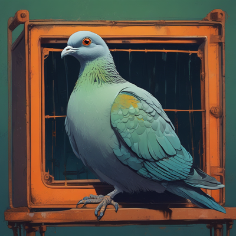

Serie de ficción narrada sobre un apocalipsis zombi en el sur de Madrid. Temporada 1: «Siete kilómetros».
Canal de YouTube: @loquemuerde
La aplicación «lo-que-muerde» es una herramienta privada que usa el creador del canal para subir y programar sus propios vídeos en YouTube a través de la API de datos de YouTube.